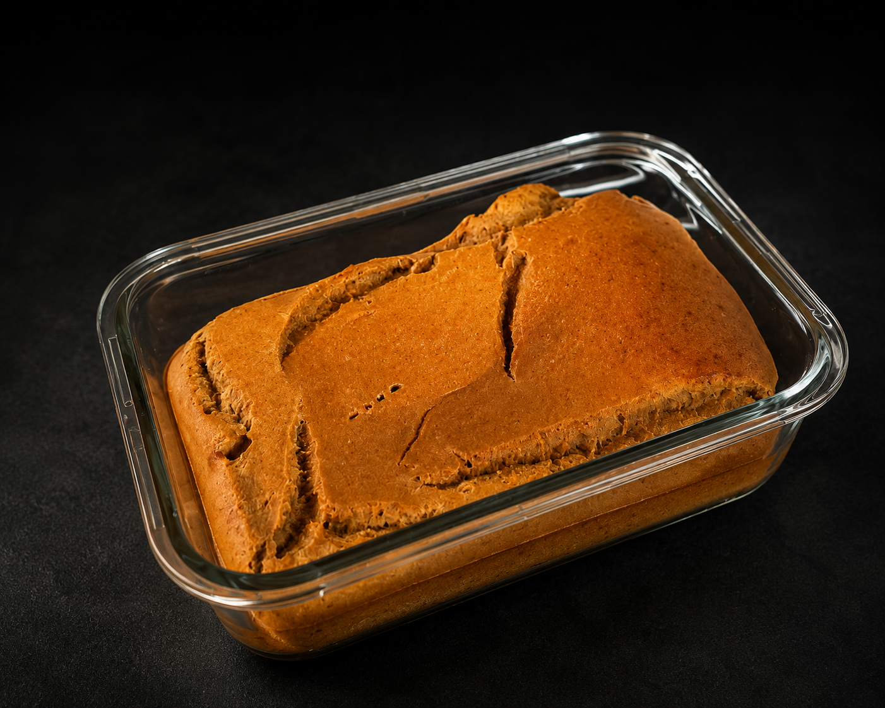

Gâteau protéiné à la patate douce

Ingrédients
- 300 g de patate douce
- 2 œufs
- 35 g de flocons d'avoine
- 30 g de whey
- 80 ml de lait
- 5 g de baking powder (levure chimique)
Préparation
- Cuire les 300 g de patate douce au micro-ondes pendant environ 10 minutes, jusqu'à ce qu'elle soit bien tendre.
- Préchauffer le four à 180°C.
- Dans un blender, mettre les 2 œufs, les flocons d'avoine, la whey, le lait et le baking powder.
- Ajouter la patate douce cuite.
- Mixer le tout jusqu'à obtenir une préparation lisse et homogène.
- Verser la préparation dans un moule adapté au four.
- Enfourner à 180°C pendant environ 20 à 25 minutes.
- Vérifier la cuisson puis laisser légèrement refroidir avant de démouler et déguster.
Valeurs nutritionnelles (approx.)
Pour la recette entière : 670 kcal • 47 g protéines • 17 g lipides • 75 g glucides • 13 g fibres